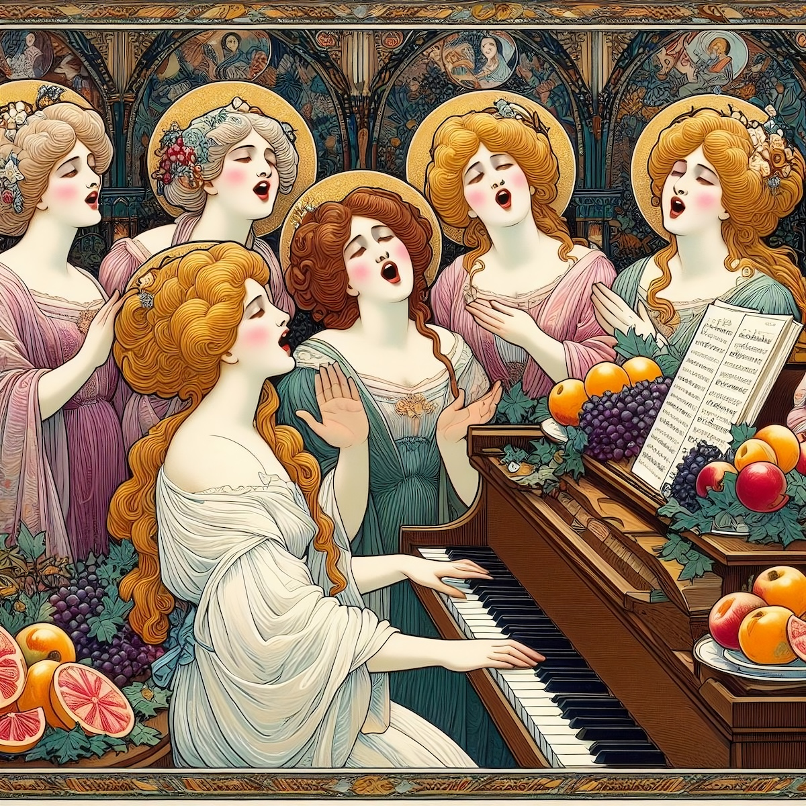

norbuspa02
Jan Nemeček - Am Kiehlufer

Norbu Spa, a sanctuary of untold narratives, veiled from the discerning gaze of ecclesiastical entities, becomes the clandestine haven for the "Secret Choral Saints of Fabulous Hair." In this secluded alcove, a coterie of companions finds solace in the harmonious embrace of a soothing jam session, their spirits buoyed by an abundance of luscious, fresh fruit.
Each chord struck and melody woven hints at a utopian future, a dreamscape where the creation of music is a universal joy, accompanied by a symphony of refreshing libations. This vision, a tableau of communal artistry and indulgence, is a poignant reflection of the world as it could be – a place where every soul is liberated to express through song, cradled in the arms of camaraderie and sweet refreshment.
Listen
Each chord struck and melody woven hints at a utopian future, a dreamscape where the creation of music is a universal joy, accompanied by a symphony of refreshing libations. This vision, a tableau of communal artistry and indulgence, is a poignant reflection of the world as it could be – a place where every soul is liberated to express through song, cradled in the arms of camaraderie and sweet refreshment.
Listen
norbuspa01
lbdl - Day One (At the Spa)

"Day One (At the Spa)" by lbdl is a mesmerizing debut that weaves the tale of two souls embarking on a hazy but transcendent journey of relaxation and culinary delight within the sanctuary of a spa. Hinting the start of their euphoric adventure, the album artfully juxtaposes the exhilaration of their high with the tranquil ambiance of the spa, crafting a narrative that dances between the soothing tranquility of relaxation and the joyous indulgence in gourmet pleasures.
As the narrative unfolds, it crescendos into dramatic confrontations and exhilarating conclusions, each moment a brushstroke in this intricate mural of life. The story, imbued with depth and realism, leaves the audience yearning to accompany our heroes further. It poses an enigmatic question: What revelations will the morrow bring in this odyssey of the soul? This part of the journey is not just a sequence of events, but a poetic exploration of life's ebb and flow, inviting the listener to ponder the unfathomable depths of the human experience.
Listen
As the narrative unfolds, it crescendos into dramatic confrontations and exhilarating conclusions, each moment a brushstroke in this intricate mural of life. The story, imbued with depth and realism, leaves the audience yearning to accompany our heroes further. It poses an enigmatic question: What revelations will the morrow bring in this odyssey of the soul? This part of the journey is not just a sequence of events, but a poetic exploration of life's ebb and flow, inviting the listener to ponder the unfathomable depths of the human experience.
Listen